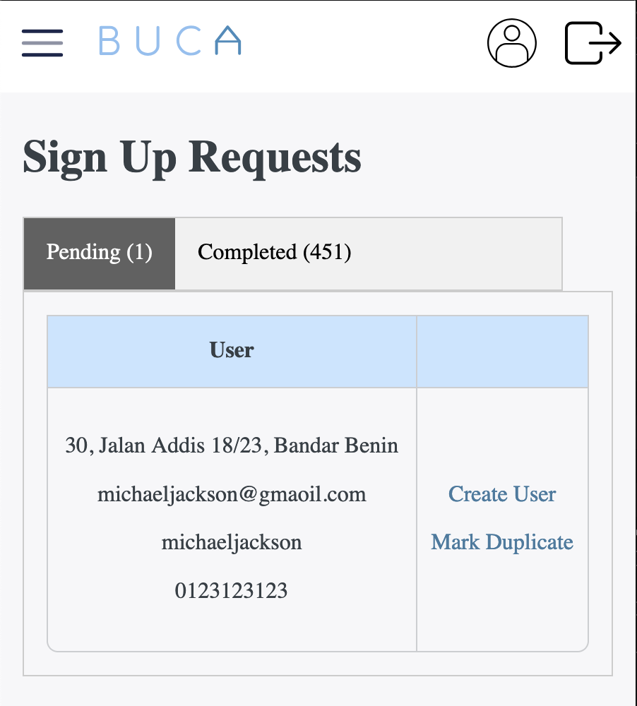

BUCA Manual
Getting Started
A committee member just require a phone or laptop with internet access.
If you are using the security feature, the guards need a phone/computer with internet access.
Every security post should have one mobile phone.
The next step is to create some users.
How to create Users
There are three main ways to create users:
- Data Import
- Resident Sign Up
- Manual Creation
To sign up, share the sign up link with residents:
After filling out the form, the committee would then approve and create the user:
If
Types of Main Users
There are two types of main users on this platform:
- Normal Users (Residents)
- Power Users (Committee Members)
How to create users?
There are two ways to create accounts for users/residents:
- Manual Creation
- Data Import
Creating Payments
Who Can Create Payments?
Both Normal Users and Power Users can create payments.
Normal Users Creating Payments
When a Normal User creates a payment, it involves:
- Entering their house address.
- Choosing the number of cars and providing each car’s plate number.
- Attaching a payment receipt and specifying the payment method, payment date, and any remarks.
Note: When a Normal User creates a payment, it is tied only to that user who created it.
Power Users Creating Payments
A Power User can do everything a Normal User does, plus:
- Change the house address for the payment.
- Change the user associated with the payment.
- Update car details on the payment.
- Confirm the payment.
It’s recommended that Normal Users (residents) create and enter their own payment details to reduce the committee’s workload. However, Power Users (committee members) can also create payments on behalf of Normal Users and must confirm all payments.
Confirming Payments
When a payment is confirmed, it means the attached payment receipt matches the payment details. Once confirmed:
- An email with the payment receipt is automatically sent to the user’s email, as long as they have logged in at least once before (to ensure the email is valid).
- Both Normal Users and Power Users can view the confirmed receipt on the website.
Note: We only send receipts to users who have logged in before. This may change in the future, depending on the RA’s request, to allow sending to all users regardless of their login status.
Additional UX Features
-
Auto-Fill From Previous Year
-
When creating payment details for a house that had a payment in the previous year, the system can automatically:
- Display users associated with that house (making it easier to select who the payment is for).
- Copy the number of cars and car plate numbers from last year to speed up the process.
-
When creating payment details for a house that had a payment in the previous year, the system can automatically:
-
Quick Confirmation (Beta)
- Lets Power Users quickly view the payment receipt and details on a single page for easy confirmation.
- Allows edits to the payment on the same page.
- Once a payment is confirmed, the system automatically takes you to the next payment in line for confirmation.
Normal Users
Certain features are only available to Normal Users who have “paid” for the latest year. A Normal User is considered to have paid for the latest year if they’re associated with a house that has a payment confirmed by a Power User.
Normal User Features
-
Search Car Plates
-
Users can look up car plate details, but the information shown is limited for privacy:
- If the car is associated with a payment, it will show that the car belongs to a specific street (but not the house number).
- If the car is not associated with any payments, it will show the latest entry (date and time) of the car into the neighborhood and the street it visited (again, not the house number).
-
Users can look up car plate details, but the information shown is limited for privacy:
-
Registered Visitors
- Users can register visitors’ vehicles in advance.
- When the security guard enters the visitor’s car plate, they’ll see that this car is a registered visitor, which can reduce ID checks and speed up entry.
- This feature’s effectiveness depends on the RA security’s standard operating procedures.
-
RSVP for Events
- Users can see what events are happening (e.g., AGM) and submit RSVPs, specifying the number of attendees.
All Features
Membership Payments
- Quick Confrim - Confirm payments easily and quickly
- Receipt - A receipt is automatically generated and sent to payer
- Issued - Easily track when gate tags and car sticker are issued.
- Payment - Committee & residents are able to create membership payments
- Statistics - View houses that have dropped out, due to pay, etc.
- Import - Import user details, address of houses and membership payment details
- Export - Easily export yearly payment details for audit and accounting pruposes
- Cars - Keep track of number of vehicles associated with a membership payment
Security
- Digital Log Book - Guards record car & motorbike entries through the app
- Audit Trail - View reason for visits, car number plate and house address
- Export - Export security logs
Finance
- Invoice - Store invoice details and attachments for future reference
- Payment Vouchers - Combine multiple invoices into one payment with auto-generated PV
- Bookkeeping - Track your weekly, monthly and yearly expenditures
Events
- AGM - Track attendances based on user info and house address
- Export - Easily export attendances info for record keeping and audit requirements
Others
- Visitors - Residents may register visitors for convenience and/or reduce car traffic
- Users - Residents can create an account themselves or committee members amy assist
- Statistics - View statistics on security (car entries) and membership payments